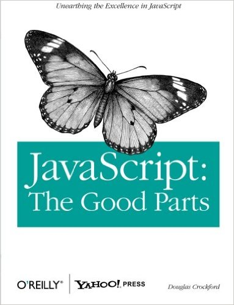

JS Fundamentals
@luispablo
Why???
ECMAScript
(ES5, ES6 / ES2015)
Types
- number (64 bits floating point, as Double in Java)
- string
- boolean
- null
- undefined
- object (functions, arrays, etc)
Numbers
- NaN
- Infinity (values greater than 1.79769313486231570e+308)
- Math
Strings
" vs '
immutable
===
Boolean
Falsy values
- false
- null
- undefined
- ""
- 0
- NaN
Object
Object
Object literal
var empty_object = {};
var stooge = {
"first-name": "Jerome", // quotes needed
last_name: "Howard" // quotes are optional
};
Object
Properties retrieval
stooge["first-name"] // "Jerome"
stooge["middle-name"] // undefined
flight.departure.IATA // recommended, if I know it exists
var person = anotherVar || "Tom";
var name = person && person.name;
Functions
var add = function add (a, b) {
return a + b;
};
Functions
Closures
function dummy (name) {
return function boob (lastName) {
// here we've access to lastName AND name
}
}
Functions
Special parameters
this
arguments
Functions
Special parameters - this
Depends on how it's invoked
- method invocation
- function invocation
- constructor invocation
- apply invocation
Functions
return
Scope
var a = 1;
function add () {
var b = 2;
}
for (var i = 0; i < 15; i++) {
var c = 3;
}
// a, i y c exist, only b doesn't.
Scope
Hoisting
function add () {
var a = 1;
// some more code
var b = 2;
}
Scope
Closures
var quo = function (status) {
return {
get_status: function ( ) {
return status;
}
};
};
// Make an instance of quo.
var myQuo = quo("amazed");
document.writeln(myQuo.get_status()); // => "amazed"
Scope
IIFE
(function () {
console.log("hi, man!");
}());
// => "hi, man!"
Scopes
Callbacks
var printer = function (value) {
console.log("The result is: "+ value);
};
var add = function (a, b, callback) {
var result = a + b;
callback(result);
};
add(3, 7, printer); // => The result is: 10
Scope
Module pattern
var serial_maker = function () {
var prefix = '';
var seq = 0;
return {
set_prefix: function (p) { prefix = String(p); },
set_seq: function (s) { seq = s; },
gensym: function () {
var result = prefix + seq;
seq += 1;
return result;
}
};
};
var seqer = serial_maker();
seqer.set_prefix('Q');
seqer.set_seq(1000);
var unique = seqer.gensym(); // unique is "Q1000"
Scopes
Curry
var add = function (num1) {
return function (num2) {
return num1 + num2;
};
};
var add1 = add(1);
console.log(add1(5)); // 6
Scopes
Memoization (1 of 2)
With recursion:
var fibonacci = function (n) {
return n < 2 ? n : fibonacci(n − 1) + fibonacci(n − 2);
};
for (var i = 0; i <= 10; i += 1) {
document.writeln('// ' + i + ': ' + fibonacci(i));
}
// 0: 0
// 1: 1
// 2: 1
// 3: 2
// 4: 3
// 5: 5
// 6: 8
// 7: 13
// 8: 21
// 9: 34
// 10: 55 => 453 invocaciones a fibonacci
Scopes
Memoization (2 de 2)
Improved with a cache or memoization
var fibonacci = (function ( ) {
var memo = [0, 1];
var fib = function (n) {
var result = memo[n];
if (typeof result !== 'number') {
result = fib(n − 1) + fib(n − 2);
memo[n] = result;
}
return result;
};
return fib;
}( ));
Cannot believe it!

Inheritance
Inheritance
Prototypal (1 of 2)
var Mammal = function (name) {
this.name = name;
};
Mammal.prototype.get_name = function ( ) {
return this.name;
};
Mammal.prototype.says = function ( ) {
return this.saying || '';
};
var Cat = function (name) {
this.name = name;
this.saying = 'meow';
};
// Replace Cat.prototype with a new instance of Mammal
Cat.prototype = new Mammal();
Inheritance
Prototypal (2 of 2)
Augmenting
Cat.prototype.purr = function (n) {
var i, s = '';
for (i = 0; i < n; i += 1) {
if (s) {
s += '-';
}
s += 'r';
}
return s;
};
Cat.prototype.get_name = function () {
return this.says() + ' ' + this.name + ' ' + this.says();
};
var myCat = new Cat('Henrietta');
var says = myCat.says(); // 'meow'
Inheritance
Functional
var mammal = function (spec) {
var that = {};
that.getName = function () { return spec.name; };
that.says = function () { return spec.saying || ''; };
return that;
};
var myMammal = mammal({ name: 'Herb' });
var cat = function (spec) {
spec.saying = spec.saying || "meow";
var that = mammal(spec);
that.getName = function () { return that.says() + ' ' + spec.name; };
return that;
};
var myCat = cat({name: 'Henrietta'});
Arrays
Arrays
length
var myArray = [];
myArray.length // 0
myArray[1000000] = true;
myArray.length // 1000001
// myArray contains one property.
Exceptions
try {
...
} catch (e) {
...
}
throw new Error("Some message");
var a = { message: "I'm an error" };
throw a;
Regular expressions
NO-FUC#!@NG-WAY
Good to know methods
Arrays
- concat (a, b, ...)
- join (",")
- push (element)
- pop ()
- reverse ()
- shift ()
- slice (start, end)
- sort (function (e1, e2) { ... })
- splice (start, deleteCount, item...)
- unshift (item...)
Good to know methods
Function
- apply (thisArg, argArray)
Good to know methods
Object
- hasOwnProperty (name)
Good to know methods
String
- charAt (pos)
- charCodeAt (pos)
- concat (string...)
- indexOf (searchString, position)
- lastIndexOf (searchString, position)
- localeCompare (that)
- match (regexp)
- replace (searchValue, replaceValue)
- search (regexp)
- slice (start, end)
- split (separator, limit)
- substring (start, end)
- toLocaleLower / UpperCase ()
- toLower / UpperCase ()
- String.fromCharCode (char...)
Awful parts
Globals
var foo = value; // out of all scope
window.foo = value;
foo = value; // was for beginners, ended being a heavy load
Awful parts
Scope
Awful parts
Semicolon insertion
return
{
status: true
};
return;
{
status: true
};
// returns undefined!!!
Awful parts
typeof
typeof(null)
Awful parts
parseInt
parseInt("16") === parseInt("16 tons") === 16
Awful parts
Operador +
Awful parts
Floating point numbers
0.1 + 0.2 === ...
Awful parts
NaN
typeof NaN === "number"
parseInt("oops") // NaN
NaN === NaN // false
NaN !== NaN // true
Awful parts
== & ===
"1" == 1 // true
"1" === 1 // false
Awful parts
eval()
Awful parts
function statement vs. function expression
alert(foo()); // ERROR! foo wasn't loaded yet
var foo = function() { return 5; };
alert(foo()); // Alerts 5.
function foo() { return 5; }
Awful parts
new
JSON
JavaScript Object Notation
Docs
Book

Docs
Reference
Mozilla MDN
https://developer.mozilla.org/
Docs
Quick Guide
JavaScript The Right Way
http://jstherightway.org/